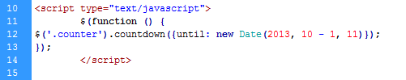
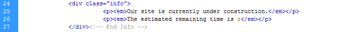
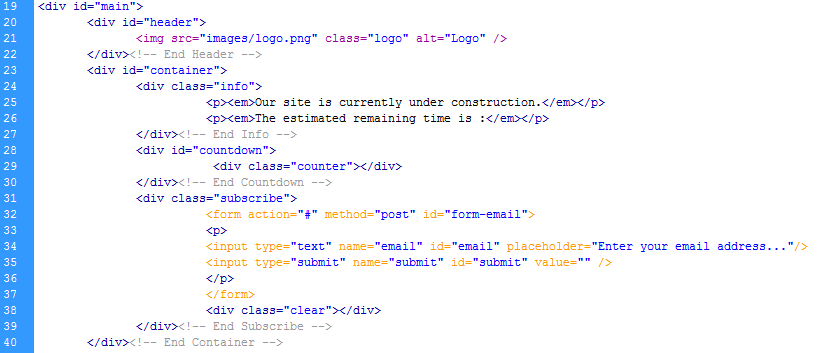

Thank you for purchasing my theme. If you have any questions that are beyond the scope of this help file, please feel free to email via my user page contact form here. Thanks so much!
The template is very easy to setup and you should be up and running in few minutes.
Open the index.html file in any text editor like notepad, wordpad etc and on line 12 search for this (2013, 10 - 1, 11): 10 - 1 refers to 10th month and 11th is the date so change accordingly.

Open the index.html file in any text editor like notepad, wordpad etc and make the required changes on 25th and 26th line.

This theme is a fixed layout. All of the information within the main content area is nested within a div with an id of "main". The general template structure is the same throughout the template. Here is the general structure.
I'm using one CSS file in this theme. All the changes needs to be done in style.css, it contains all of the specific stylings for the page.
The file is separated into many sections using:
/****************** GLOBAL SETTINGS **************/
* {margin:0; padding:0}
body {
background:#444 url(../images/bg.jpg) repeat;
height:100%;
}
.clear{clear:both}
img{border:none}
/********************* Main Section ******************/
#main{
margin:100px auto;
padding:0;
font:Georgia, "Times New Roman", Times, serif;
color:#646464;
background-position:center center;
width:700px;
text-align:center;
}
If you would like to edit a specific section of the site, simply find the appropriate label in the CSS file, and then scroll down until you find the appropriate style that needs to be edited.
This theme imports three Javascript files.
I've included one psds with this theme:
If you'd like to change the logo image in the header, open "logo.psd", make the necessary adjustments, and then save the file as "logo.png".
Once again, thank you so much for purchasing this theme. As I said at the beginning, I'd be glad to help you if you have any questions relating to this theme. No guarantees, but I'll do my best to assist. If you have a more general question relating to the themes on ThemeForest, you might consider visiting the forums and asking your question in the "Item Discussion" section.